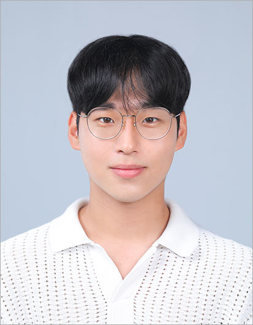

Group
|
|
|
Current Members
 |
Seyong Kim, MS
Research interest: Satellite MIMO, AI-RAN |
 |
Subin Shin, MS
Research interest: MIMO-ISAC, AI-RAN |
Hyeongtak Yun
Research interest: Satellite MIMO, MIMO-ISAC |
Juntaek Han
Research interest: MIMO-ISAC, AI-RAN |
Jeongwoo Park
Research interest: Optimization for E-MIMO |
|  | Hyeonuk Kim
Research interest: MIMO-ISAC |
Geonha Kim
Research interest: AI-RAN |
Seongkyu Jung
Research interest: MIMO-ISAC |
 |
Chaehyun Jung
Research interest: Model-based Deep Learning |
TaeJun Ha
Research interest: ML-Aided Channel Estimation |
Yehoo Min
|
Minwoo Eun
|
Hyunsoo Lee
|
Jaehoon Lee
|
Alumni
 |
Kanguk Lee, MS
Selected accomplishments:
|
 |
Namhyun Kim, MS
Selected accomplishments:
|